This workbook explores a dataset pertaining to the transactions of a non-store online retailer based in the United Kingdom. This workbook will firsty perform basic data exploration of the dataset and implement add value models focusing on CRM management and consumer purchasing patterns.
Analyze data initially to derive insights that typically add value in an online retail context. Features such as stock code, unit price, customer id etc will allow us answer such question as which SKUs and customers drive revenue the most and when are the busiest times of the year for the retailer.
The features present will allow us segment customers by performing a Recency, Frequency and Monetary(RFM) based on their past purchasing behavior. Based on the customer’s segmentation the most optimal add value action can be executed in relation to each respective customer.
Finally, a market basket analysis will be performed to identify which SKUs are frequently purchased together.Knowledge of this will allow for revenue to be maximised by upselling.
retail <- read.csv('C:\\Users\\Finta\\Downloads\\OnlineRetail.csv\\OnlineRetail.csv')
summary(retail)## InvoiceNo StockCode Description Quantity
## Length:541909 Length:541909 Length:541909 Min. :-80995.00
## Class :character Class :character Class :character 1st Qu.: 1.00
## Mode :character Mode :character Mode :character Median : 3.00
## Mean : 9.55
## 3rd Qu.: 10.00
## Max. : 80995.00
##
## InvoiceDate UnitPrice CustomerID Country
## Length:541909 Min. :-11062.06 Min. :12346 Length:541909
## Class :character 1st Qu.: 1.25 1st Qu.:13953 Class :character
## Mode :character Median : 2.08 Median :15152 Mode :character
## Mean : 4.61 Mean :15288
## 3rd Qu.: 4.13 3rd Qu.:16791
## Max. : 38970.00 Max. :18287
## NA's :135080Add additional variables to the data set and standardise the variable names. The additional variables will allow us analyse the data better and will prove useful when building our respective models.
retail <- retail %>% set_colnames(names(.) %>% to_snake_case())
retail <- retail %>% mutate(
total_spend = unit_price * quantity,
customer_id = as.character(customer_id),
invoice_hour = as.numeric(format(strptime(invoice_date, "%m/%d/%Y %H:%M"),format = "%H")),
invoice_date = as.Date(invoice_date, format = '%m/%d/%Y'),
invoice_month = as.factor(format(invoice_date,"%m")),
invoice_day = as.factor(format(invoice_date,"%A")),
invoice_week = as.factor(format(invoice_date,"%V")),
refund = str_detect(retail$invoice_no,"^C"),
)Some obvious errors exist such as an extremely large order quantity input which was canceled. Some empty transactions exist which have a unit price of zero and customer id value. The value these observations bring is minimal so are removed.
#Remove obvious transaction errors
transaction_errors <- retail %>% filter(total_spend < -5000 | total_spend > 5000) %>%
pull(total_spend)
`%notin%` <- Negate(`%in%`)
retail <- retail %>% filter(total_spend %notin% transaction_errors)
# Remove 'empty' transactions: Total spend equals 0.00
retail <- retail %>% filter(total_spend != 0.00)Using stock code and description variables we can see the rows that contain non-transactional information such as samples.
# Non-transactional stock code & description values
lapply(1:9, function(x){
j <- retail[which(nchar(retail$stock_code) == x),]
head(table(j$description))
}) ## [[1]]
##
## Discount Manual SAMPLES
## 77 563 63
##
## [[2]]
##
## CARRIAGE
## 143
##
## [[3]]
##
## DOTCOM POSTAGE
## 707
##
## [[4]]
##
## CRUK Commission PADS TO MATCH ALL CUSHIONS
## 16 3
## POSTAGE
## 1250
##
## [[5]]
##
## 50'S CHRISTMAS GIFT BAG LARGE DOLLY GIRL BEAKER
## 130 181
## I LOVE LONDON MINI BACKPACK I LOVE LONDON MINI RUCKSACK
## 88 1
## NINE DRAWER OFFICE TIDY OVAL WALL MIRROR DIAMANTE
## 34 161
##
## [[6]]
##
## 4 PURPLE FLOCK DINNER CANDLES 3 BLACK CATS W HEARTS BLANK CARD
## 41 3
## 3 GARDENIA MORRIS BOXED CANDLES 3 ROSE MORRIS BOXED CANDLES
## 89 174
## 3 WHITE CHOC MORRIS BOXED CANDLES 3D DOG PICTURE PLAYING CARDS
## 125 90
##
## [[7]]
##
## EDWARDIAN PARASOL BLACK
## 388
##
## [[8]]
##
## BOXED GLASS ASHTRAY BOYS PARTY BAG
## 4 11
## CAMOUFLAGE DOG COLLAR HAYNES CAMPER SHOULDER BAG
## 1 1
## OOH LA LA DOGS COLLAR SUNJAR LED NIGHT NIGHT LIGHT
## 1 2
##
## [[9]]
##
## AMAZON FEE GIRLS PARTY BAG
## 8 13Counting the most common stock codes according to the number of characters in it. Stock codes with values of D,M,S represent discounts, manual imput and samples respectively.
Stock code characters = 1: Discount, Manual input or Sample.
Stock code characters = 2: ‘carriage’ primarily pertaining to transactions to Ireland.
Stock code characters = 3: Dotcom Postage.
Stock code characters = 4: Postage.
Stock code characters = 7: Unsaleable, destroyed.
Stock code characters = 9: Amazon Fee
# Amazon fee
amazon_fee <- retail[which(retail$stock_code == 'AMAZONFEE'),]
amazon_fee_total <- amazon_fee %>%
summarise(total_amazon_fee = round(sum(total_spend))) %>%
pull(total_amazon_fee) %>%
comma()
# Total Amazon Fee costOutgoing expense labeled ‘AMAZONFEE’ totals £-20,207
# Postage
postage_fee <- retail[which(retail$stock_code == 'POST'),]
postage_fee_total <- postage_fee %>%
summarise(total_postage_fee = round(sum(total_spend))) %>%
pull(total_postage_fee) %>%
comma()Revenue labeled ‘POST’ recorded in primarily non UK transactions totals £66,231.
#Remove chosen values
retail <- retail %>% filter(stock_code %notin% c('S','M'))
retail <- retail[-which(retail$stock_code == 'AMAZONFEE'),]
retail <- retail[-which(retail$stock_code == 'POST'),]Removing transactions pertaining to stock code values for samples, manual input, amazon fees and postage.
refund_per_transaction <- round(mean(retail$refund == 'TRUE'),3)
refund_per_transaction## [1] 0.016Total number of refunds per item bought is 0.016
refund_invoice <-retail %>% filter(refund == 'TRUE') %>%
group_by(invoice_no,customer_id) %>%
summarise(refund_total = sum(total_spend)) %>%
mutate(refund_total = abs(refund_total)) # Data frame containing refunded invoices only.
sale_invoice <- retail %>% filter(refund == 'FALSE') %>%
group_by(invoice_no,customer_id) %>%
summarise(refund_total = sum(total_spend)) # Data frame containing sales invoices only.
# Match refunds with sales based off total invoice amount and customer id
sale_refund_df <- sale_invoice %>% inner_join(refund_invoice,by = c('customer_id','refund_total'))
sale_refund_invoices <- c(sale_refund_df$invoice_no.x,sale_refund_df$invoice_no.y)
# Combining sales & refund invoice numbers in one vector
retail %>% filter(invoice_no == '537217' | invoice_no == 'C537406') %>% select(-c(invoice_date,invoice_hour,invoice_month, invoice_day,invoice_week))## invoice_no stock_code description quantity unit_price
## 1 537217 22849 BREAD BIN, DINER STYLE, MINT 4 14.95
## 2 537217 22847 BREAD BIN, DINER STYLE, IVORY 4 14.95
## 3 537217 22927 GREEN GIANT GARDEN THERMOMETER 4 5.95
## 4 537217 22926 IVORY GIANT GARDEN THERMOMETER 4 5.95
## 5 C537406 22926 IVORY GIANT GARDEN THERMOMETER -4 5.95
## 6 C537406 22927 GREEN GIANT GARDEN THERMOMETER -4 5.95
## 7 C537406 22847 BREAD BIN DINER STYLE IVORY -4 14.95
## 8 C537406 22849 BREAD BIN DINER STYLE MINT -4 14.95
## customer_id country total_spend refund
## 1 15502 United Kingdom 59.8 FALSE
## 2 15502 United Kingdom 59.8 FALSE
## 3 15502 United Kingdom 23.8 FALSE
## 4 15502 United Kingdom 23.8 FALSE
## 5 15502 United Kingdom -23.8 TRUE
## 6 15502 United Kingdom -23.8 TRUE
## 7 15502 United Kingdom -59.8 TRUE
## 8 15502 United Kingdom -59.8 TRUEretail <- retail %>% filter(invoice_no %notin% sale_refund_invoices)
# Removing invoice numbers pertaining to initial transaction and refund. Some canceled sales invoices can be matched up with their sales equivalent by matching the customer id and if the absolute value of each invoice is identical.
#Missing Values
lapply(retail, function(x){
missing <- is.na(x)
length(which(missing == 'TRUE'))
}) #Function counting the number of missing values in each variable## $invoice_no
## [1] 0
##
## $stock_code
## [1] 0
##
## $description
## [1] 0
##
## $quantity
## [1] 0
##
## $invoice_date
## [1] 0
##
## $unit_price
## [1] 0
##
## $customer_id
## [1] 132118
##
## $country
## [1] 0
##
## $total_spend
## [1] 0
##
## $invoice_hour
## [1] 0
##
## $invoice_month
## [1] 0
##
## $invoice_day
## [1] 0
##
## $invoice_week
## [1] 0
##
## $refund
## [1] 0customer_id is the only variable with missing values
#customer_id missing values
mean(is.na(retail$customer_id)) ## [1] 0.2470442Proportion of missing values in customer_id variable.
# Total spend comparing existing and missing customer ids
m1 <- retail %>% mutate(missing_cust_id = is.na(customer_id)) %>%
ggplot(aes(total_spend, fill = missing_cust_id)) +
geom_histogram() +
scale_y_continuous(trans = "log10",labels = comma) +
scale_x_continuous(trans = "log2",labels = comma) +
xlab("Total Spend") +
ylab("Count") +
ggtitle("Total Spend by missing and existing customer id") +
guides(fill=guide_legend('Missing Customer Id'))
# Daily transactions comparing exisiting and missing customer ids
m2 <-retail %>% mutate(missing_cust_id = is.na(customer_id)) %>%
ggplot(aes(invoice_day, fill = missing_cust_id,label = )) +
geom_histogram(stat = "count") +
xlab("Day") +
ylab("Transaction Count") +
ggtitle("Transactions by day of the week") +
guides(fill=guide_legend('Missing Customer Id'))
# Country transactions comparing existing and missing customer ids
m3 <-retail %>% mutate(missing_cust_id = is.na(customer_id)) %>%
ggplot(aes(country, fill = missing_cust_id)) +
geom_histogram(stat = "count") +
theme(axis.text.x = element_text(angle = 90, vjust = 0.5, hjust=1)) +
guides(fill=guide_legend('Missing Customer Id'))
# Month transactions comparing existing and missing customer ids
m4 <- retail %>% mutate(missing_cust_id = is.na(customer_id)) %>%
ggplot(aes(invoice_month, fill = missing_cust_id)) +
geom_histogram(stat = "count") +
theme(axis.text.x = element_text(angle = 90, vjust = 0.5, hjust=1)) +
xlab("Month") +
ylab("Transaction Count") +
ggtitle("Transactions by month") +
guides(fill=guide_legend('Missing Customer Id'))
# Epoch transactions comparing existing and missing customer ids
m5 <- retail %>% mutate(missing_cust_id = is.na(customer_id)) %>%
ggplot(aes(invoice_week, fill = missing_cust_id)) +
geom_histogram(stat = "count") +
theme(axis.text.x = element_text(angle = 90, vjust = 0.5, hjust=1)) +
guides(fill=guide_legend('Missing Customer Id'))
grid.arrange(m1,m2,m4)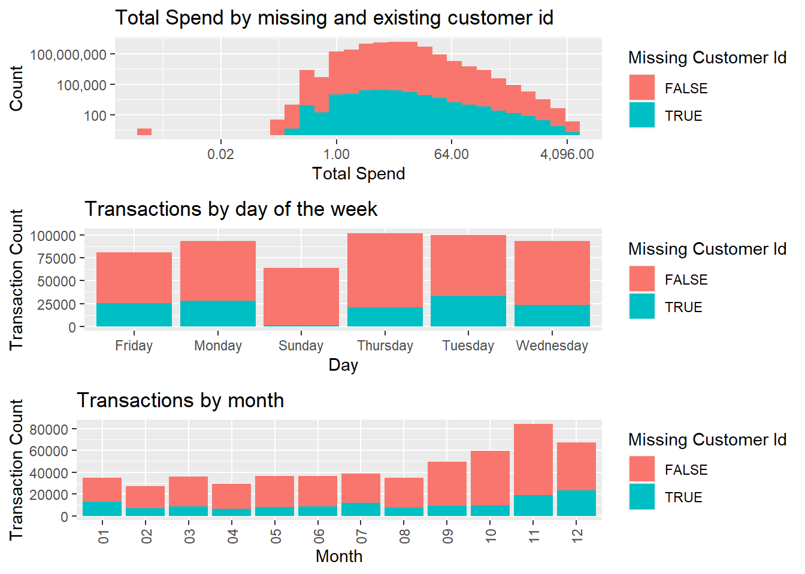
No discernible reason as to why missing customer id values exist.
Each individual invoice number represents the purchase(s) made by a customer on a given occasion.
unique_invoices <- comma(length(unique(retail$invoice_no)))
# Number of transactionsA total of 22,801 unique invoices contained in this data set
# Total spend per invoice
invoice_spend <- retail %>% group_by(invoice_no) %>%
summarise(total_invoice_amount = sum(total_spend)) %>%
arrange(desc(total_invoice_amount))
summary(invoice_spend$total_invoice_amount)## Min. 1st Qu. Median Mean 3rd Qu. Max.
## -16459.00 97.09 250.60 435.13 439.23 52940.94Difference between median and mean caused by a number of high revenue generating invoices.
# Total spend per invoice histogram
invoice_hist <- invoice_spend %>%
ggplot(aes(total_invoice_amount)) +
geom_histogram(bins = 10) +
scale_x_continuous(labels = comma) +
scale_y_continuous(labels = comma) +
geom_vline(xintercept = mean(invoice_spend$total_invoice_amount), # Add line for mean
col = "green",
lwd = 3) +
geom_vline(xintercept = median(invoice_spend$total_invoice_amount), # Add line for median
col = "red",
lwd = 3) +
xlab("Total Invoice Amount") +
ylab("Count") +
ggtitle("Invoice Amount Histogram")
invoice_hist_log <- invoice_spend %>%
ggplot(aes(total_invoice_amount)) +
geom_histogram(bins = 10) +
scale_x_continuous(trans = 'log2', labels = comma) +
scale_y_continuous(trans = "log2",labels = comma) +
geom_vline(xintercept = mean(invoice_spend$total_invoice_amount),
col = "green",
lwd = 3) + # Add line for mean
geom_vline(xintercept = median(invoice_spend$total_invoice_amount),
col = "red",
lwd = 3) + # Add line for median
xlab("Total Invoice Amount") +
ylab("Count") +
ggtitle("Invoice Amount Histogram - Log 2")
grid.arrange(invoice_hist,invoice_hist_log)Green Line = Mean: 435
Red Line = Median: 250.6
invoice_item_quantities <- retail %>% group_by(invoice_no) %>%
summarise(quantities_bought = sum(quantity)) %>%
arrange(desc(quantities_bought))
summary(invoice_item_quantities$quantities_bought)## Min. 1st Qu. Median Mean 3rd Qu. Max.
## -9360.0 35.0 124.0 232.2 264.0 15049.0invoice_item_quantities %>% ggplot(aes('',quantities_bought)) +
geom_boxplot() +
xlab("") +
ylab("Quanties per Invoice") +
ggtitle("Quantity of Items per Invoice") # number of items bought per transactions
invoice_quantities <- invoice_item_quantities %>%
ggplot(aes(quantities_bought)) +
geom_histogram() +
scale_x_continuous(labels = comma) +
scale_y_continuous(labels = comma) +
geom_vline(xintercept = mean(invoice_item_quantities$quantities_bought), # Add line for mean
col = "green",
lwd = 3) +
geom_vline(xintercept = median(invoice_item_quantities$quantities_bought), # Add line for median
col = "red",
lwd = 3) +
xlab("Quantities Bought Per Invoice") +
ylab("Count") +
ggtitle("Quantities Per Invoice Histogram")
invoice_quantities_log <- invoice_item_quantities %>%
ggplot(aes(quantities_bought)) +
geom_histogram() +
scale_x_continuous(trans = 'log2',labels = comma) +
scale_y_continuous(trans = "log2",labels = comma) +
geom_vline(xintercept = mean(invoice_item_quantities$quantities_bought), # Add line for mean
col = "green",
lwd = 3) +
geom_vline(xintercept = median(invoice_item_quantities$quantities_bought), # Add line for median
col = "red",
lwd = 3) +
xlab("Quantities Bought Per Invoice") +
ylab("Count") +
ggtitle("Quantities Per Invoice Histogram - Log2")
grid.arrange(invoice_quantities,invoice_quantities_log)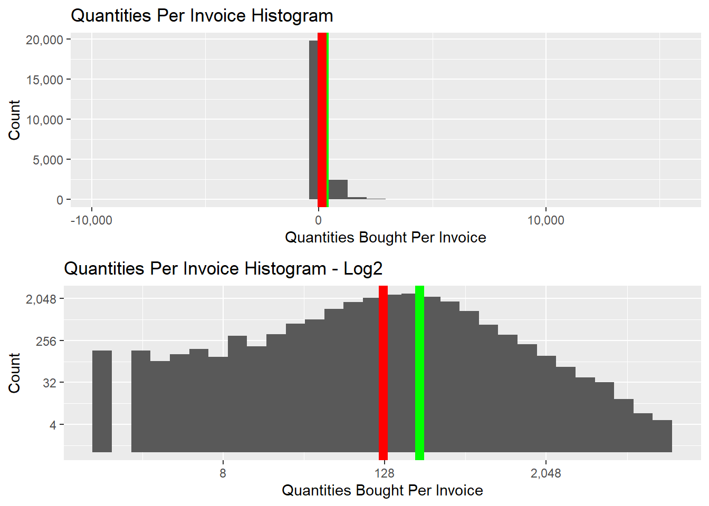
## stock_code
sku_num <- comma(length(unique(retail$stock_code))) #Number of SKUSNumber of unique SKUs is 3,930
# SKU sales count
sku_sales_count <- retail %>% filter(nchar(retail$stock_code) == 6 |nchar(retail$stock_code) == 7 | nchar(retail$stock_code) == 5) %>%
count(stock_code)
summary(sku_sales_count$n)## Min. 1st Qu. Median Mean 3rd Qu. Max.
## 1.0 17.0 66.0 136.5 171.0 2290.0Summary of individual SKU sales count
*Note: Sales count in this context denotes how often an indivual stock code was included in an invoice.
#SKU sales distribution
sku_sales_count %>%
arrange(desc(n)) %>%
ggplot(aes(x = reorder(stock_code,n),n)) +
geom_bar(stat = 'identity',position="dodge") +
theme(axis.text.y=element_blank(),
axis.ticks.y=element_blank()) +
coord_flip() +
xlab("Stock Code") +
ylab("SKU Invoice Inclusion") +
ggtitle("SKU Invoice Inclusion Count") +
scale_y_continuous(labels = comma)# Conforms strongly to the power rule 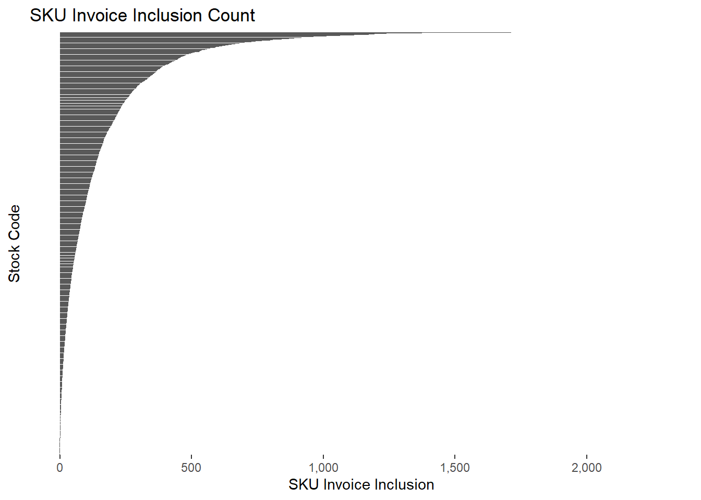
SKU purchase distribution conforms strongly to the power rule; a small number of SKUs account for a large percentage of overall SKUs sold.
# SKU sales distribution by quantile - Mosaic graph
sku_sales_count %>%
mutate(stock_quant = ntile(rank(n),10)) %>%
group_by(stock_quant) %>%
summarise(total_quantile_count = sum(n)) %>%
mutate(items_sold_proportion = round(total_quantile_count/sum(total_quantile_count),2)) %>%
ggplot(aes(area = total_quantile_count, fill = stock_quant, label = paste0('Q',stock_quant,'\n\n',items_sold_proportion)))+
geom_treemap() +
geom_treemap_text(colour = "Black",
place = "centre",
size = 20,
show.legend = TRUE) +
theme(legend.position = "none") +
scale_fill_viridis(option="mako") +
ggtitle("Quantile Sales Count Proportion")The top 10% selling SKUs account for 45% of total SKUs sold.
The top 20% selling SKUs account for 65% of total SKUs sold.
# Most popular skus
popular_stock_code <- sku_sales_count %>% slice_max(n,n = 20)
popular_stock_code <- popular_stock_code %>% left_join(retail) %>% group_by(stock_code,description,n) %>%
summarise(total_spend = sum(total_spend)) %>%
filter(total_spend > 0) %>%
arrange(desc(n)) %>%
rename('total_transaction_number' = n)
popular_stock_code[1:2,]## # A tibble: 2 x 4
## # Groups: stock_code, description [2]
## stock_code description total_transaction_n~ total_spend
## <chr> <chr> <int> <dbl>
## 1 85123A CREAM HANGING HEART T-LIGHT HOLDER 2290 179.
## 2 85123A WHITE HANGING HEART T-LIGHT HOLDER 2290 97610.Some stock codes have more than one corresponding description as can be seen above with the highest selling SKU.
popular_stock_code %>%
arrange(total_transaction_number) %>%
ggplot(aes(total_transaction_number,fct_inorder(description))) +
geom_bar(stat = 'identity') +
xlab("Count of SKUs included in an invoice") +
ylab("SKU Description") +
ggtitle("Most Popular SKUs") +
scale_x_continuous(labels = comma)# Most profitable skus
profitable_stock_code <- popular_stock_code %>% left_join(retail) %>% group_by(stock_code,description,total_transaction_number) %>%
summarise(total_spend = sum(total_spend)) %>%
filter(total_spend > 0) %>%
arrange(desc(total_spend))
profitable_stock_code## # A tibble: 26 x 4
## # Groups: stock_code, description [26]
## stock_code description total_transactio~ total_spend
## <chr> <chr> <int> <dbl>
## 1 22423 "REGENCY CAKESTAND 3 TIER" 2163 162625.
## 2 47566 "PARTY BUNTING" 1714 98244.
## 3 85123A "WHITE HANGING HEART T-LIGHT HOLDER" 2290 97610.
## 4 85099B "JUMBO BAG RED RETROSPOT" 2142 92356.
## 5 22086 "PAPER CHAIN KIT 50'S CHRISTMAS " 1195 63486.
## 6 84879 "ASSORTED COLOUR BIRD ORNAMENT" 1495 58960.
## 7 22386 "JUMBO BAG PINK POLKADOT" 1240 41600.
## 8 22720 "SET OF 3 CAKE TINS PANTRY DESIGN " 1461 37428.
## 9 22960 "JAM MAKING SET WITH JARS" 1218 36116.
## 10 20725 "LUNCH BAG RED RETROSPOT" 1629 34897.
## # ... with 16 more rowsHighest revenue generating SKUs
profitable_stock_code %>%
arrange(total_spend) %>%
ggplot(aes(total_spend,fct_inorder(description))) +
geom_bar(stat = 'identity') +
xlab("Total Revenue") +
ylab("SKU Description") +
ggtitle("Most Profitable SKUs") +
scale_x_continuous(labels = comma)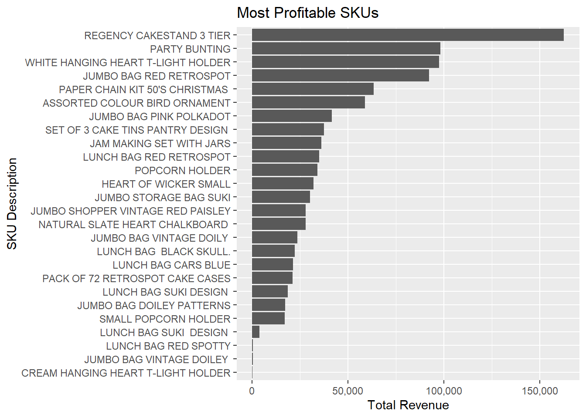
# Non performing SKUs
non_performing_skus <- sku_sales_count %>% filter(n < 4) %>%
left_join(retail) %>%
filter(total_spend < 50) %>%
group_by(stock_code,description) %>%
summarise(stock_code_revenue = sum(total_spend),number_of_basket_entries = n())
non_performing_skus_nrow <- non_performing_skus %>% nrow()367 SKUs have a total revenue of under £50.
# frequently returned stock items
retail %>% filter(nchar(retail$stock_code) == 6 |nchar(retail$stock_code) == 7) %>%
filter(refund == 'TRUE') %>%
count(stock_code) %>%
arrange(desc(n)) %>%
top_n(6)## stock_code n
## 1 85099B 37
## 2 85123A 35
## 3 75049L 20
## 4 82494L 13
## 5 85159B 13
## 6 79191C 12summary(retail$quantity)## Min. 1st Qu. Median Mean 3rd Qu. Max.
## -9360.0 1.0 3.0 9.9 10.0 4800.0#Distribution of SKU quantities purchased in a transaction
retail %>%
filter(quantity > 0) %>%
ggplot(aes(quantity)) +
geom_histogram(binwidth = 0.5) +
scale_x_continuous(trans = 'log2',labels = comma) +
geom_vline(xintercept = mean(retail$quantity), # Add line for mean
col = "green",
lwd = 3) +
geom_vline(xintercept = median(retail$quantity), # Add line for median
col = "red",
lwd = 3) +
xlab("Quantities of SKUs bought") +
ylab("Count") +
ggtitle("SKU Quantities Bought") +
scale_y_continuous(labels = comma)quantities_sold_per_invoice <- retail %>% group_by(invoice_no) %>%
summarise(total_quantities_sold = sum(quantity))
quantities_sold_per_invoice %>% ggplot(aes(total_quantities_sold)) +
geom_histogram(binwidth = 0.5) +
scale_x_continuous(trans = 'log2',labels = comma) +
xlab("Quantity Per Invoice") +
ylab("Count") +
ggtitle("Quantity Count Per Invoice") +
scale_y_continuous(labels = comma)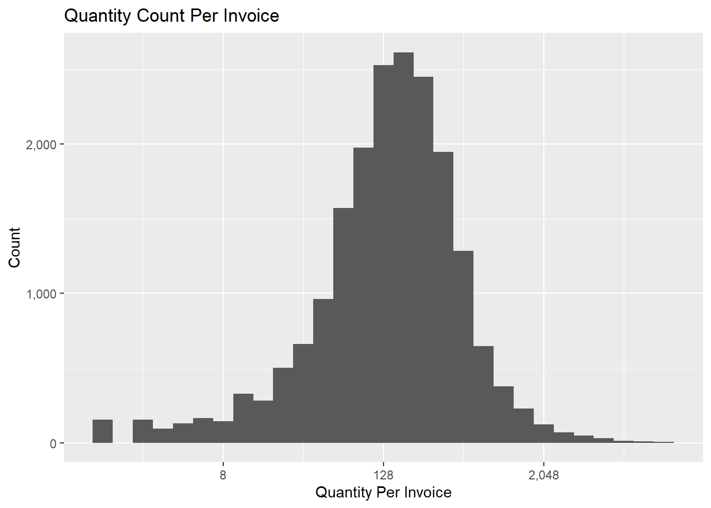
mean(is.na(retail$customer_id))## [1] 0.2470442Total proportion of missing ids is 0.2470442
length(unique(retail$customer_id))## [1] 4352Total number of unique customer ids is 4352
customer_spend <- retail %>%
filter(!is.na(customer_id)) %>%
group_by(customer_id) %>%
summarise(total_customer_spend = sum(total_spend)) %>%
arrange(desc(total_customer_spend)) %>%
mutate(proportion_of_total_spend = total_customer_spend/sum(total_customer_spend))
customer_spend %>% top_n(10)## # A tibble: 10 x 3
## customer_id total_customer_spend proportion_of_total_spend
## <chr> <dbl> <dbl>
## 1 14646 278572. 0.0339
## 2 18102 259657. 0.0316
## 3 17450 182506. 0.0222
## 4 14911 128222. 0.0156
## 5 12415 123638. 0.0150
## 6 14156 114505. 0.0139
## 7 17511 88138. 0.0107
## 8 16684 65892. 0.00801
## 9 13694 62677. 0.00762
## 10 15311 59444. 0.00723Highest revenue customers and their proportion of overall revenue.
# Customer spend by quantile
customer_spend %>%
mutate(quantile = ntile(rank(total_customer_spend),10)) %>%
group_by(quantile) %>%
summarise(total_spend = sum(total_customer_spend)) %>%
mutate(percent_of_sales = total_spend/sum(total_spend),percent_of_sales = scales::percent(percent_of_sales),total_spend = total_spend/1000000) %>%
ggplot(aes(area = total_spend,fill = quantile,label = paste(percent_of_sales, round(total_spend,digits = 2),paste('Q',quantile), sep = "\n"))) +
geom_treemap() +
geom_treemap_text(colour = "Black",
place = "centre",
size = 20,
show.legend = TRUE) +
theme(legend.position = "none") +
scale_fill_viridis(option="mako")The top 20% of customers account for around 73% of total revenue.
length(unique(retail$country))## [1] 38Number of countries sold to.
customer_country <- retail %>% select(customer_id,country) %>%
group_by(customer_id) %>%
summarise(country = unique(country))
table(customer_country$country)##
## Australia Austria Bahrain
## 9 11 2
## Belgium Brazil Canada
## 25 1 4
## Channel Islands Cyprus Czech Republic
## 9 7 1
## Denmark EIRE European Community
## 9 4 1
## Finland France Germany
## 12 88 95
## Greece Hong Kong Iceland
## 4 1 1
## Israel Italy Japan
## 5 14 8
## Lebanon Lithuania Malta
## 1 1 2
## Netherlands Norway Poland
## 9 10 6
## Portugal RSA Saudi Arabia
## 20 1 1
## Singapore Spain Sweden
## 1 29 8
## Switzerland United Arab Emirates United Kingdom
## 22 2 3935
## Unspecified USA
## 5 2Number of customers per country
retail %>% group_by(country) %>%
summarise(spend_per_country = round(sum(total_spend))) %>%
mutate(prop = round(spend_per_country/sum(spend_per_country),2)) %>%
ggplot(aes(area = spend_per_country, fill = country, label = paste(country,comma(spend_per_country),prop,sep = "\n"))) +
geom_treemap() +
geom_treemap_text(colour = "Black",
place = "centre",
size = 20,
show.legend = TRUE) +
theme(legend.position = "none")# Non UK Country Spend
retail %>% filter(country != 'United Kingdom') %>%
group_by(country) %>%
summarise(spend_per_country = round(sum(total_spend))) %>%
arrange(spend_per_country) %>%
ggplot(aes(fct_inorder(country),spend_per_country)) +
geom_bar(stat = 'identity') +
scale_y_continuous(trans = 'log2') +
coord_flip() +
ylab("Revenue Per Country") +
xlab("Country") +
ggtitle("Total Revenue Per Non-UK Country") +
scale_y_continuous(labels = comma)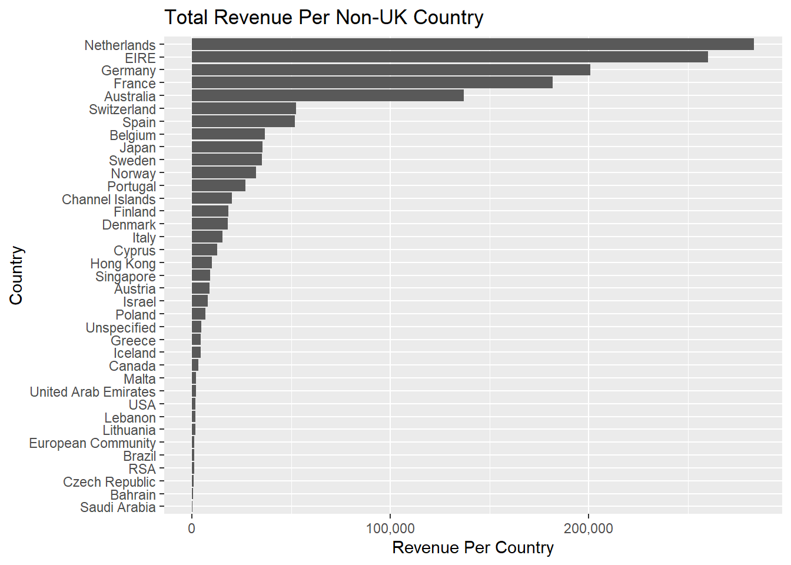
# Customers per country
retail %>% group_by(country) %>%
summarise(no_of_customers = length(unique(customer_id))) %>%
arrange(no_of_customers) %>%
ggplot(aes(fct_inorder(country),no_of_customers)) +
geom_bar(stat = 'identity') +
coord_flip() +
ylab("Customers Per Country") +
xlab("Country") +
ggtitle("Total Customers Per Country") +
scale_y_continuous(labels = comma)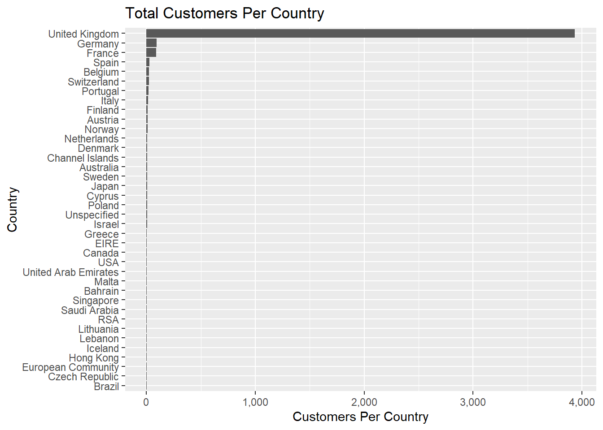
# Customers per country minus UK
retail %>% filter(country != 'United Kingdom') %>%
group_by(country) %>%
summarise(no_of_customers = length(unique(customer_id))) %>%
arrange(no_of_customers) %>%
ggplot(aes(fct_inorder(country),no_of_customers)) +
geom_bar(stat = 'identity') +
coord_flip() +
ylab("Customers Per Country") +
xlab("Country") +
ggtitle("Total Customers Per Non-UK Country") +
scale_y_continuous(labels = comma)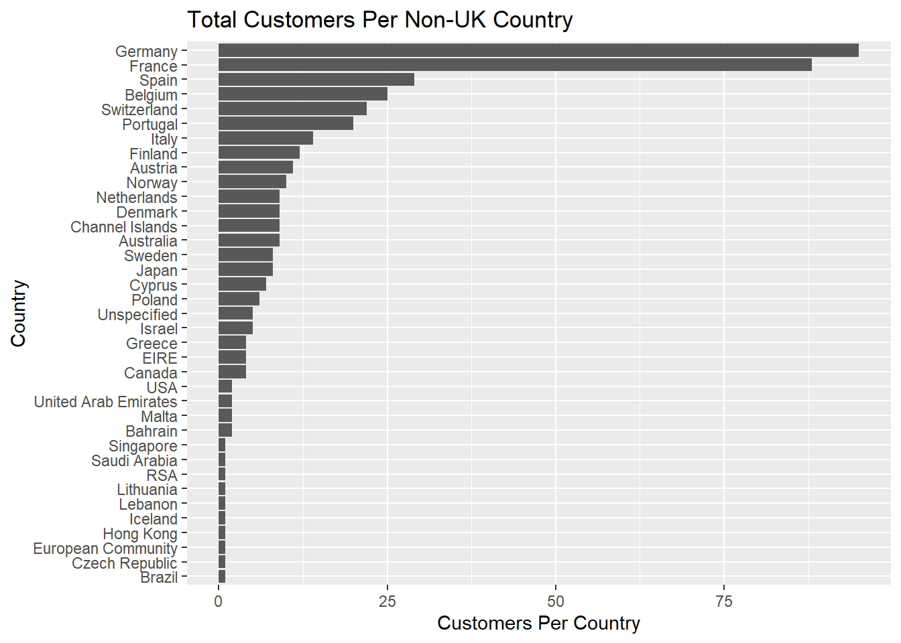
# Invoices per country
retail %>% group_by(country) %>%
summarise(invoices_per_country = length(unique(invoice_no))) %>%
arrange(invoices_per_country) %>%
ggplot(aes(fct_inorder(country),invoices_per_country)) +
geom_bar(stat = 'identity') +
coord_flip() +
ylab("Invoices Per Country") +
xlab("Country") +
ggtitle("Total Invoices Per Country") +
scale_y_continuous(labels = comma)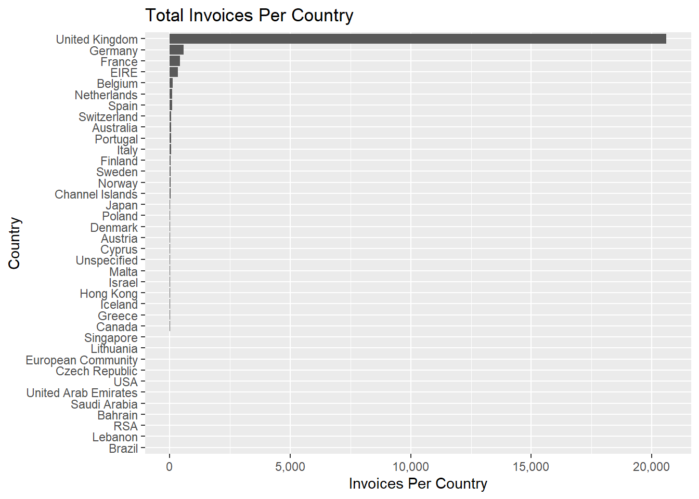
# Invoices per country minus UK
retail %>% filter(country != 'United Kingdom') %>%
group_by(country) %>%
summarise(invoices_per_country = length(unique(invoice_no))) %>%
arrange(invoices_per_country) %>%
ggplot(aes(fct_inorder(country),invoices_per_country)) +
geom_bar(stat = 'identity') +
coord_flip() +
ylab("Invoices Per Country") +
xlab("Country") +
ggtitle("Total Invoices Per Non-UK Country") +
scale_y_continuous(labels = comma)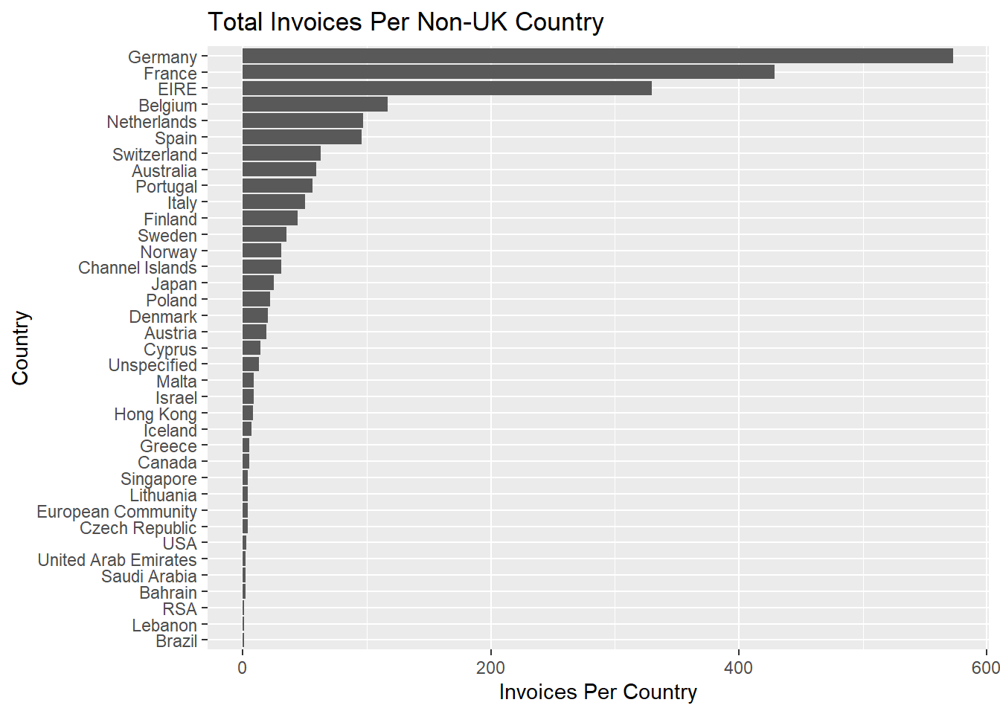
range(retail$invoice_date)## [1] "2010-12-01" "2011-12-09"Incomplete calender year for 2011 so dates should range from Dec 2010 to Nov 2011
calender_year_sales <- retail %>% filter(between(invoice_date,as.Date('2010-12-01'),as.Date('2011-11-30')))
range(calender_year_sales$invoice_date)## [1] "2010-12-01" "2011-11-30"Remove dates non pertinent to the above range.
epoch_summary <- calender_year_sales %>%
group_by(invoice_week) %>%
summarise(total_weekly_earnings = sum(total_spend),
weekly_transactions_no = length(unique(invoice_no)))
epoch_summary_ordered <- epoch_summary[c(48:51,1:47),]
epoch_summary_scaled <- epoch_summary_ordered %>%
mutate(total_weekly_earnings = scale(total_weekly_earnings),
weekly_transactions_no = scale(weekly_transactions_no))
head(epoch_summary_ordered)## # A tibble: 6 x 3
## invoice_week total_weekly_earnings weekly_transactions_no
## <fct> <dbl> <int>
## 1 48 365926. 874
## 2 49 308210. 606
## 3 50 204954. 540
## 4 51 88393. 199
## 5 01 127541. 281
## 6 02 182902. 301head(epoch_summary_scaled)## # A tibble: 6 x 3
## invoice_week total_weekly_earnings[,1] weekly_transactions_no[,1]
## <fct> <dbl> <dbl>
## 1 48 2.45 3.29
## 2 49 1.67 1.31
## 3 50 0.265 0.822
## 4 51 -1.32 -1.69
## 5 01 -0.789 -1.09
## 6 02 -0.0354 -0.942Data frames detailing both scaled and total weekly revenue and number of transactions(invoices recorded)
epoch_summary_scaled %>%
gather(factor,value,-invoice_week) %>%
mutate(factor = as.factor(factor)) %>%
mutate(factor = recode_factor(factor,total_weekly_earnings = 'Weekly Revenue',weekly_transactions_no = 'Weekly Transactions')) %>%
ggplot(aes(fct_inorder(invoice_week),value,group= factor,color = factor)) +
geom_line() +
theme(axis.text.x = element_text(angle = 90, vjust = 0.5, hjust=1)) +
guides(color =guide_legend('')) +
ylab("Z Score") +
xlab("Invoice Week") +
ggtitle("Transaction and Revenue Weekly Distribution") +
scale_y_continuous(labels = comma)epoch_summary_earnings <- epoch_summary_ordered %>%
select(invoice_week,total_weekly_earnings) %>%
gather(total_weekly_earnings,value,-invoice_week) %>%
ggplot(aes(fct_inorder(invoice_week),value,group = total_weekly_earnings)) +
geom_point() +
geom_line() +
geom_smooth() +
theme(axis.text.x = element_text(angle = 90, vjust = 0.5, hjust=1)) +
ylab("Revenue") +
xlab("Invoice Week") +
ggtitle("Total Weekly Revenue") +
scale_y_continuous(labels = comma)
epoch_summary_earnings# Total sales by month
monthly_earnings <- calender_year_sales %>% group_by(invoice_month) %>%
summarise(earnings_by_month = sum(total_spend))
monthly_earnings <- monthly_earnings[c(12,1:11),]
monthly_earnings %>%
ggplot(aes(fct_inorder(invoice_month),earnings_by_month,group = 1)) +
geom_line() +
ylab("Revenue") +
xlab("Invoice Month") +
ggtitle("Total Montly Revenue") +
scale_y_continuous(labels = comma)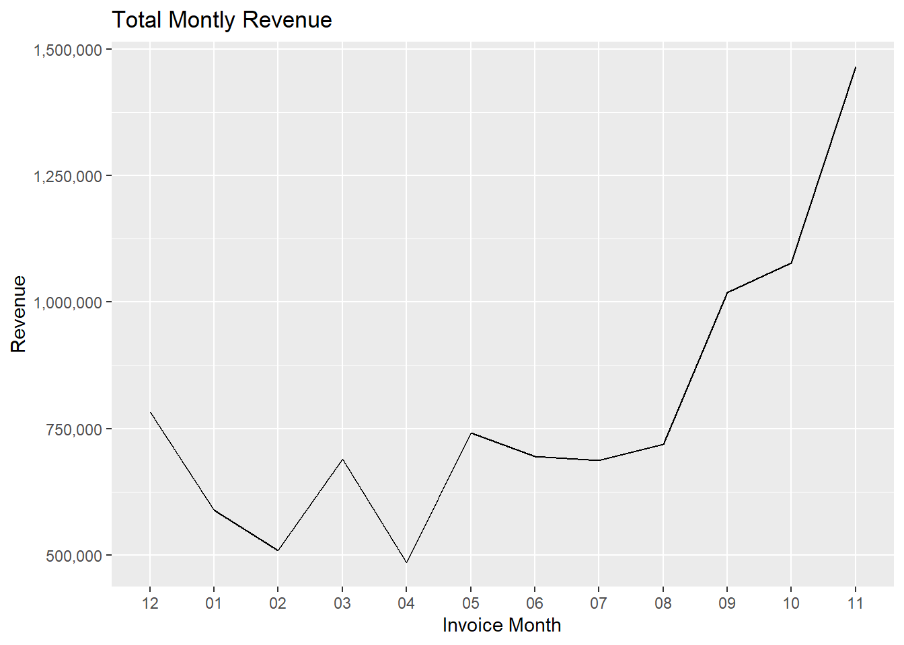
arb_date <- max(retail$invoice_date) + 1
rfm_retail <- retail %>% filter(!is.na(customer_id)) %>%
group_by(invoice_no,customer_id,invoice_date) %>%
summarise(total_spend = sum(total_spend))Prepare data frame for RFM analysis by removing rows with missing customer id values.
#RFM Table
rfm_data <- rfm_table_order(
data = rfm_retail,
customer_id = customer_id,
order_date = invoice_date,
revenue = total_spend,
analysis_date = arb_date,
recency_bins = 5,
frequency_bins = 5,
monetary_bins = 5,
)
rfm_data[1:6,]## # A tibble: 6 x 9
## customer_id date_most_recent recency_days transaction_count amount
## <chr> <date> <dbl> <dbl> <dbl>
## 1 12347 2011-12-07 3 7 4310
## 2 12348 2011-09-25 76 4 1437.
## 3 12349 2011-11-21 19 1 1458.
## 4 12350 2011-02-02 311 1 294.
## 5 12352 2011-11-03 37 5 1145.
## 6 12353 2011-05-19 205 1 89
## # ... with 4 more variables: recency_score <int>, frequency_score <int>,
## # monetary_score <int>, rfm_score <dbl>Assign RFM score to each customer id.
# Assign segments names
segment_names <- c("Champions", "Loyal Customers", "Potential Loyalist",
"New Customers", "Promising", "Need Attention", "About To Sleep",
"At Risk", "Can't Lose Them", "Hibernating", "Lost")
# Assign classification rules for segments
recency_lower <- c(4, 2, 3, 4, 3, 3, 2, 1, 1, 2, 1)
recency_upper <- c(5, 4, 5, 5, 4, 4, 3, 2, 1, 3, 1)
frequency_lower <- c(4, 3, 1, 1, 1, 3, 1, 2, 4, 2, 1)
frequency_upper <- c(5, 4, 3, 1, 1, 4, 2, 5, 5, 3, 1)
monetary_lower <- c(4, 4, 1, 1, 1, 3, 1, 2, 4, 2, 1)
monetary_upper <- c(5, 5, 3, 1, 1, 4, 2, 5, 5, 3, 1)
segments <- rfm_segment(rfm_data, segment_names, recency_lower, recency_upper,
frequency_lower, frequency_upper, monetary_lower, monetary_upper)# Combine customer segmentation with main data frame
combined_rfm_df <- retail %>% left_join(segments) %>%
select(customer_id,total_spend,segment,rfm_score,recency_score,frequency_score,monetary_score,stock_code)
combined_rfm_df <- combined_rfm_df %>% group_by(customer_id) %>%
summarise(total_spend = sum(total_spend),segment = unique(segment),rfm_score = unique(rfm_score),
recency_score = unique(recency_score),frequency_score = unique(frequency_score), monetary_score = unique(monetary_score))
combined_rfm_df## # A tibble: 4,352 x 7
## customer_id total_spend segment rfm_score recency_score frequency_score
## <chr> <dbl> <chr> <dbl> <int> <int>
## 1 12347 4310 Champions 555 5 5
## 2 12348 1437. Loyal Customers 244 2 4
## 3 12349 1458. Others 414 4 1
## 4 12350 294. Others 112 1 1
## 5 12352 1145. Loyal Customers 344 3 4
## 6 12353 89 Lost 111 1 1
## 7 12354 1079. Others 114 1 1
## 8 12355 459. Others 112 1 1
## 9 12356 2487. Loyal Customers 435 4 3
## 10 12357 6208. Others 315 3 1
## # ... with 4,342 more rows, and 1 more variable: monetary_score <int># Count of customers per section
combined_rfm_df %>% filter(!is.na(customer_id)) %>%
group_by(segment) %>%
summarise(count = n(), spend = round(sum(total_spend)))## # A tibble: 8 x 3
## segment count spend
## <chr> <int> <dbl>
## 1 About To Sleep 317 74833
## 2 At Risk 552 530908
## 3 Champions 957 5561999
## 4 Lost 319 39460
## 5 Loyal Customers 365 673955
## 6 Need Attention 121 83678
## 7 Others 724 882363
## 8 Potential Loyalist 996 380382segment_count <- combined_rfm_df %>% filter(!is.na(customer_id)) %>%
group_by(segment) %>%
summarise(count = n(), spend = sum(total_spend)) %>%
arrange(count) %>%
ggplot(aes(count,fct_inorder(segment))) +
geom_bar(stat = 'identity') +
ylab("Segment") +
xlab("Count") +
ggtitle("Total Segment Count") +
scale_x_continuous(labels = comma)
segment_spend <- combined_rfm_df %>% filter(!is.na(customer_id)) %>%
group_by(segment) %>%
summarise(count = n(), spend = sum(total_spend)) %>%
arrange(spend) %>%
ggplot(aes(spend,fct_inorder(segment))) +
geom_bar(stat = 'identity') +
ylab("Segment") +
xlab("Revenue") +
ggtitle("Total Segment Revenue") +
scale_x_continuous(labels = comma)
grid.arrange(segment_count,segment_spend) 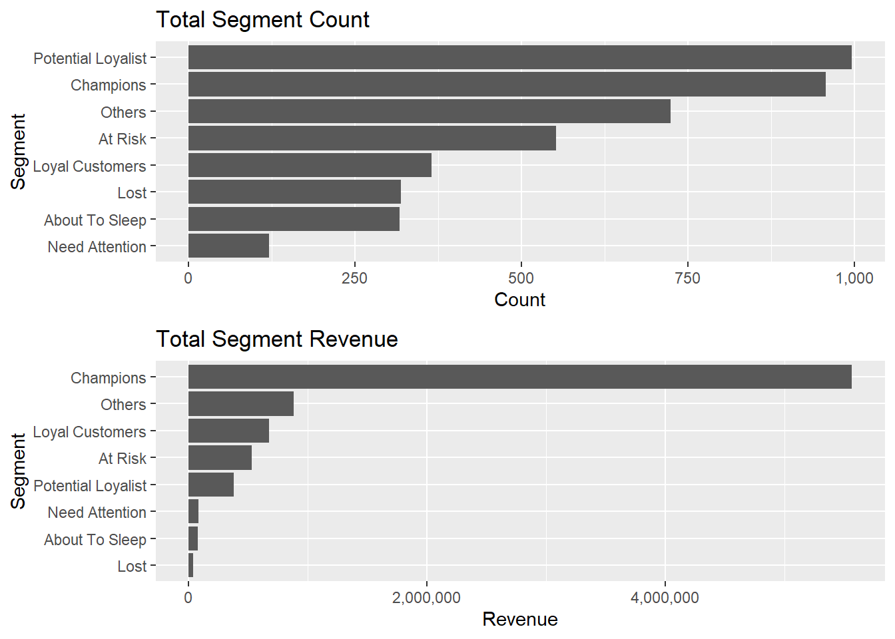
Model to identify what products are likely to be purchased together and be used to develop or optimize cross selling initiatives on retail sites.
# Preprocess data for basket analysis - Description
retail_basket <- retail %>% filter(refund == 'FALSE') %>%
select(invoice_no,description)
retail_basket <- retail_basket %>% group_by(invoice_no) %>%
mutate(id = cur_group_id()) %>%
ungroup() %>%
select(id, description) # Assign basket variable as a key. # Convert data to class transaction
retail_list <- split(retail$description,retail_basket$id) # Group items according the basket they belong to
retail_trans <- as(retail_list,'transactions') #Convert list to transactions
retail_rules <- apriori(retail_trans, parameter=list(supp=0.007, conf=0.4)) # Create rule object## Apriori
##
## Parameter specification:
## confidence minval smax arem aval originalSupport maxtime support minlen
## 0.4 0.1 1 none FALSE TRUE 5 0.007 1
## maxlen target ext
## 10 rules TRUE
##
## Algorithmic control:
## filter tree heap memopt load sort verbose
## 0.1 TRUE TRUE FALSE TRUE 2 TRUE
##
## Absolute minimum support count: 136
##
## set item appearances ...[0 item(s)] done [0.00s].
## set transactions ...[4033 item(s), 19503 transaction(s)] done [0.28s].
## sorting and recoding items ... [1187 item(s)] done [0.01s].
## creating transaction tree ... done [0.01s].
## checking subsets of size 1 2 3 4 5 done [0.09s].
## writing ... [1962 rule(s)] done [0.00s].
## creating S4 object ... done [0.00s].# Visualise rules
plot(retail_rules)# Inspect rules
inspect(head(sort(retail_rules,by='lift'),35))## lhs rhs support confidence coverage lift count
## [1] {HERB MARKER CHIVES ,
## HERB MARKER MINT,
## HERB MARKER THYME} => {HERB MARKER PARSLEY} 0.007075834 0.9787234 0.007229657 80.20186 138
## [2] {HERB MARKER CHIVES ,
## HERB MARKER ROSEMARY,
## HERB MARKER THYME} => {HERB MARKER PARSLEY} 0.007537302 0.9735099 0.007742399 79.77464 147
## [3] {HERB MARKER CHIVES ,
## HERB MARKER MINT,
## HERB MARKER ROSEMARY} => {HERB MARKER PARSLEY} 0.007127109 0.9720280 0.007332205 79.65320 139
## [4] {HERB MARKER CHIVES ,
## HERB MARKER PARSLEY,
## HERB MARKER ROSEMARY} => {HERB MARKER THYME} 0.007537302 0.9545455 0.007896221 78.88347 147
## [5] {HERB MARKER MINT,
## HERB MARKER PARSLEY,
## HERB MARKER ROSEMARY} => {HERB MARKER CHIVES } 0.007127109 0.8424242 0.008460237 78.61148 139
## [6] {HERB MARKER CHIVES ,
## HERB MARKER PARSLEY,
## HERB MARKER THYME} => {HERB MARKER ROSEMARY} 0.007537302 0.9607843 0.007844947 78.40241 147
## [7] {HERB MARKER CHIVES ,
## HERB MARKER THYME} => {HERB MARKER PARSLEY} 0.007844947 0.9562500 0.008203866 78.36027 153
## [8] {HERB MARKER BASIL,
## HERB MARKER PARSLEY,
## HERB MARKER ROSEMARY} => {HERB MARKER THYME} 0.007844947 0.9444444 0.008306414 78.04873 153
## [9] {HERB MARKER BASIL,
## HERB MARKER MINT,
## HERB MARKER ROSEMARY} => {HERB MARKER THYME} 0.007434754 0.9415584 0.007896221 77.81023 145
## [10] {HERB MARKER MINT,
## HERB MARKER PARSLEY,
## HERB MARKER ROSEMARY} => {HERB MARKER THYME} 0.007896221 0.9333333 0.008460237 77.13051 154
## [11] {HERB MARKER MINT,
## HERB MARKER PARSLEY,
## HERB MARKER THYME} => {HERB MARKER CHIVES } 0.007075834 0.8263473 0.008562785 77.11125 138
## [12] {HERB MARKER CHIVES ,
## HERB MARKER THYME} => {HERB MARKER ROSEMARY} 0.007742399 0.9437500 0.008203866 77.01237 151
## [13] {HERB MARKER BASIL,
## HERB MARKER MINT,
## HERB MARKER THYME} => {HERB MARKER ROSEMARY} 0.007434754 0.9415584 0.007896221 76.83353 145
## [14] {HERB MARKER BASIL,
## HERB MARKER PARSLEY,
## HERB MARKER THYME} => {HERB MARKER ROSEMARY} 0.007844947 0.9386503 0.008357689 76.59622 153
## [15] {HERB MARKER MINT,
## HERB MARKER ROSEMARY,
## HERB MARKER THYME} => {HERB MARKER PARSLEY} 0.007896221 0.9333333 0.008460237 76.48235 154
## [16] {HERB MARKER PARSLEY,
## HERB MARKER ROSEMARY,
## HERB MARKER THYME} => {HERB MARKER CHIVES } 0.007537302 0.8166667 0.009229349 76.20789 147
## [17] {HERB MARKER BASIL,
## HERB MARKER MINT,
## HERB MARKER THYME} => {HERB MARKER PARSLEY} 0.007332205 0.9285714 0.007896221 76.09214 143
## [18] {HERB MARKER CHIVES ,
## HERB MARKER ROSEMARY} => {HERB MARKER PARSLEY} 0.007896221 0.9277108 0.008511511 76.02162 154
## [19] {HERB MARKER PARSLEY,
## HERB MARKER ROSEMARY} => {HERB MARKER THYME} 0.009229349 0.9183673 0.010049736 75.89372 180
## [20] {HERB MARKER MINT,
## HERB MARKER THYME} => {HERB MARKER PARSLEY} 0.008562785 0.9226519 0.009280623 75.60706 167
## [21] {HERB MARKER MINT,
## HERB MARKER PARSLEY,
## HERB MARKER THYME} => {HERB MARKER ROSEMARY} 0.007896221 0.9221557 0.008562785 75.25022 154
## [22] {HERB MARKER CHIVES ,
## HERB MARKER ROSEMARY} => {HERB MARKER THYME} 0.007742399 0.9096386 0.008511511 75.17238 151
## [23] {HERB MARKER BASIL,
## HERB MARKER MINT,
## HERB MARKER ROSEMARY} => {HERB MARKER PARSLEY} 0.007229657 0.9155844 0.007896221 75.02791 141
## [24] {HERB MARKER MINT,
## HERB MARKER ROSEMARY} => {HERB MARKER THYME} 0.008460237 0.9065934 0.009331898 74.92073 165
## [25] {HERB MARKER BASIL,
## HERB MARKER ROSEMARY} => {HERB MARKER THYME} 0.008614059 0.9032258 0.009536994 74.64243 168
## [26] {HERB MARKER BASIL,
## HERB MARKER ROSEMARY,
## HERB MARKER THYME} => {HERB MARKER PARSLEY} 0.007844947 0.9107143 0.008614059 74.62883 153
## [27] {HERB MARKER PARSLEY,
## HERB MARKER THYME} => {HERB MARKER ROSEMARY} 0.009229349 0.9137056 0.010101010 74.56067 180
## [28] {HERB MARKER BASIL,
## HERB MARKER THYME} => {HERB MARKER ROSEMARY} 0.008614059 0.9130435 0.009434446 74.50664 168
## [29] {HERB MARKER MINT,
## HERB MARKER THYME} => {HERB MARKER ROSEMARY} 0.008460237 0.9116022 0.009280623 74.38903 165
## [30] {HERB MARKER BASIL,
## HERB MARKER MINT,
## HERB MARKER PARSLEY} => {HERB MARKER THYME} 0.007332205 0.8993711 0.008152592 74.32387 143
## [31] {HERB MARKER MINT,
## HERB MARKER ROSEMARY} => {HERB MARKER PARSLEY} 0.008460237 0.9065934 0.009331898 74.29114 165
## [32] {HERB MARKER CHIVES ,
## HERB MARKER MINT} => {HERB MARKER PARSLEY} 0.007947495 0.9064327 0.008767882 74.27797 155
## [33] {HERB MARKER MINT,
## HERB MARKER PARSLEY} => {HERB MARKER CHIVES } 0.007947495 0.7948718 0.009998462 74.17409 155
## [34] {HERB MARKER CHIVES ,
## HERB MARKER PARSLEY,
## HERB MARKER ROSEMARY} => {HERB MARKER MINT} 0.007127109 0.9025974 0.007896221 73.96369 139
## [35] {HERB MARKER CHIVES ,
## HERB MARKER PARSLEY,
## HERB MARKER THYME} => {HERB MARKER MINT} 0.007075834 0.9019608 0.007844947 73.91152 138retail_hi_lift <- head(sort(retail_rules, by = 'lift'),50)
plot(retail_hi_lift,method = 'graph',col = 'blue',cex = 1)## Available control parameters (with default values):
## layout = stress
## circular = FALSE
## ggraphdots = NULL
## edges = <environment>
## nodes = <environment>
## nodetext = <environment>
## colors = c("#EE0000FF", "#EEEEEEFF")
## engine = ggplot2
## max = 100
## verbose = FALSE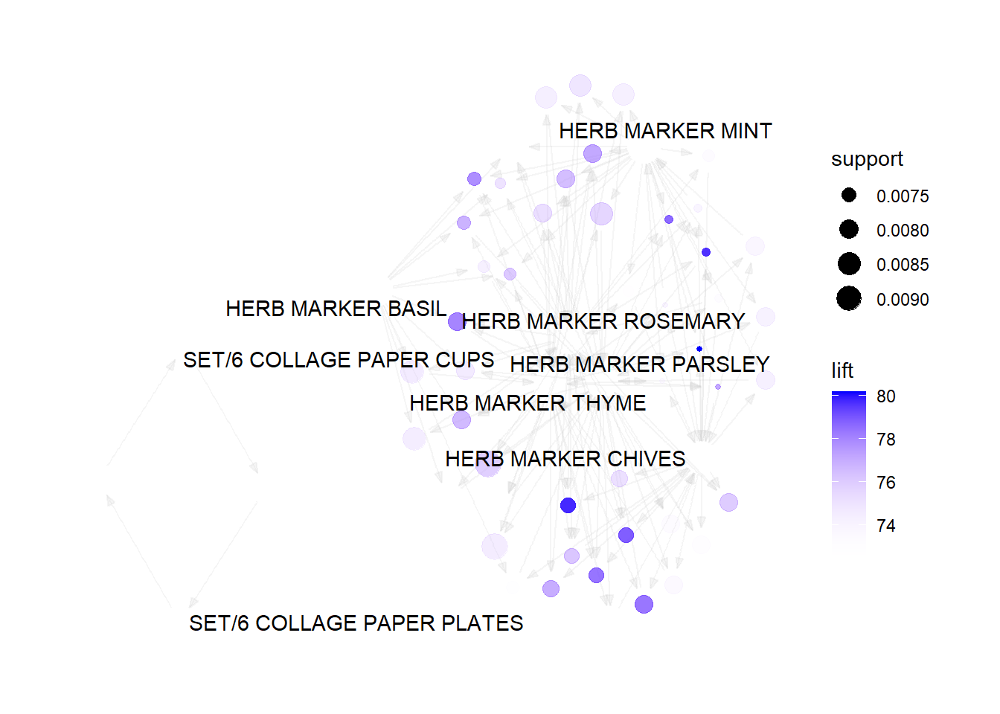
itemFrequencyPlot(retail_trans,topN=30,type = 'absolut',horiz = TRUE)Model is applied in the same way except the variable now used in stock code.
# Preprocess data for basket analysis - Stock Code
retail_basket_stock <- retail %>% filter(refund == 'FALSE') %>%
select(invoice_no,stock_code)
retail_basket_stock <- retail_basket_stock %>% group_by(invoice_no) %>%
mutate(id = cur_group_id()) %>%
ungroup() %>%
select(id, stock_code) # Assign basket variable as a key.
summary(retail_basket_stock)## id stock_code
## Min. : 1 Length:527223
## 1st Qu.: 4836 Class :character
## Median :10324 Mode :character
## Mean :10058
## 3rd Qu.:15171
## Max. :19503# Convert data to class transaction
retail_list_stock <- split(retail$stock_code,retail_basket_stock$id) # Group items according the basket they belong to
retail_trans_stock <- as(retail_list_stock,'transactions') #Convert list to transactions
retail_rules_stock <- apriori(retail_trans_stock, parameter=list(supp=0.007, conf=0.4)) # Create rule object## Apriori
##
## Parameter specification:
## confidence minval smax arem aval originalSupport maxtime support minlen
## 0.4 0.1 1 none FALSE TRUE 5 0.007 1
## maxlen target ext
## 10 rules TRUE
##
## Algorithmic control:
## filter tree heap memopt load sort verbose
## 0.1 TRUE TRUE FALSE TRUE 2 TRUE
##
## Absolute minimum support count: 136
##
## set item appearances ...[0 item(s)] done [0.00s].
## set transactions ...[3930 item(s), 19503 transaction(s)] done [0.31s].
## sorting and recoding items ... [1185 item(s)] done [0.01s].
## creating transaction tree ... done [0.01s].
## checking subsets of size 1 2 3 4 5 done [0.11s].
## writing ... [2345 rule(s)] done [0.00s].
## creating S4 object ... done [0.01s].# Visualise rules
plot(retail_rules_stock)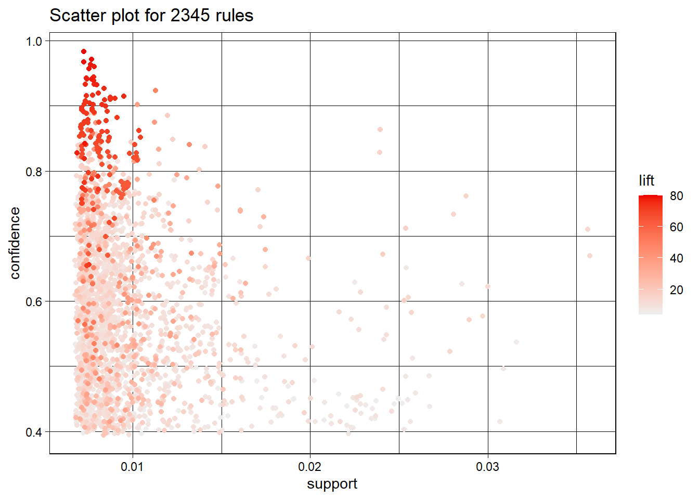
# Inspect rules
inspect(head(sort(retail_rules_stock,by='lift'),35))## lhs rhs support confidence coverage
## [1] {22916, 22919, 22921} => {22918} 0.007075834 0.9787234 0.007229657
## [2] {22916, 22917, 22921} => {22918} 0.007537302 0.9735099 0.007742399
## [3] {22917, 22919, 22921} => {22918} 0.007127109 0.9720280 0.007332205
## [4] {22917, 22918, 22921} => {22916} 0.007537302 0.9545455 0.007896221
## [5] {22917, 22918, 22919} => {22921} 0.007127109 0.8424242 0.008460237
## [6] {22916, 22918, 22921} => {22917} 0.007537302 0.9607843 0.007844947
## [7] {22916, 22921} => {22918} 0.007844947 0.9562500 0.008203866
## [8] {22917, 22918, 22920} => {22916} 0.007844947 0.9444444 0.008306414
## [9] {22917, 22919, 22920} => {22916} 0.007434754 0.9415584 0.007896221
## [10] {22917, 22918, 22919} => {22916} 0.007896221 0.9333333 0.008460237
## [11] {22916, 22918, 22919} => {22921} 0.007075834 0.8263473 0.008562785
## [12] {22916, 22921} => {22917} 0.007742399 0.9437500 0.008203866
## [13] {22916, 22919, 22920} => {22917} 0.007434754 0.9415584 0.007896221
## [14] {22916, 22918, 22920} => {22917} 0.007844947 0.9386503 0.008357689
## [15] {22916, 22917, 22919} => {22918} 0.007896221 0.9333333 0.008460237
## [16] {22916, 22917, 22918} => {22921} 0.007537302 0.8166667 0.009229349
## [17] {22916, 22919, 22920} => {22918} 0.007332205 0.9285714 0.007896221
## [18] {22917, 22921} => {22918} 0.007896221 0.9277108 0.008511511
## [19] {22917, 22918} => {22916} 0.009229349 0.9183673 0.010049736
## [20] {22916, 22919} => {22918} 0.008562785 0.9226519 0.009280623
## [21] {22916, 22918, 22919} => {22917} 0.007896221 0.9221557 0.008562785
## [22] {22917, 22921} => {22916} 0.007742399 0.9096386 0.008511511
## [23] {22917, 22919, 22920} => {22918} 0.007229657 0.9155844 0.007896221
## [24] {22917, 22919} => {22916} 0.008460237 0.9065934 0.009331898
## [25] {22917, 22920} => {22916} 0.008614059 0.9032258 0.009536994
## [26] {22916, 22917, 22920} => {22918} 0.007844947 0.9107143 0.008614059
## [27] {22916, 22918} => {22917} 0.009229349 0.9137056 0.010101010
## [28] {22916, 22920} => {22917} 0.008614059 0.9130435 0.009434446
## [29] {22916, 22919} => {22917} 0.008460237 0.9116022 0.009280623
## [30] {22918, 22919, 22920} => {22916} 0.007332205 0.8993711 0.008152592
## [31] {22917, 22919} => {22918} 0.008460237 0.9065934 0.009331898
## [32] {22919, 22921} => {22918} 0.007947495 0.9064327 0.008767882
## [33] {22918, 22919} => {22921} 0.007947495 0.7948718 0.009998462
## [34] {22917, 22918, 22921} => {22919} 0.007127109 0.9025974 0.007896221
## [35] {22916, 22918, 22921} => {22919} 0.007075834 0.9019608 0.007844947
## lift count
## [1] 80.20186 138
## [2] 79.77464 147
## [3] 79.65320 139
## [4] 78.88347 147
## [5] 78.61148 139
## [6] 78.40241 147
## [7] 78.36027 153
## [8] 78.04873 153
## [9] 77.81023 145
## [10] 77.13051 154
## [11] 77.11125 138
## [12] 77.01237 151
## [13] 76.83353 145
## [14] 76.59622 153
## [15] 76.48235 154
## [16] 76.20789 147
## [17] 76.09214 143
## [18] 76.02162 154
## [19] 75.89372 180
## [20] 75.60706 167
## [21] 75.25022 154
## [22] 75.17238 151
## [23] 75.02791 141
## [24] 74.92073 165
## [25] 74.64243 168
## [26] 74.62883 153
## [27] 74.56067 180
## [28] 74.50664 168
## [29] 74.38903 165
## [30] 74.32387 143
## [31] 74.29114 165
## [32] 74.27797 155
## [33] 74.17409 155
## [34] 73.96369 139
## [35] 73.91152 138retail_hi_lift_stock <- head(sort(retail_rules_stock, by = 'lift'),50)
plot(retail_hi_lift_stock,method = 'graph',col = 'blue',cex = 1)## Available control parameters (with default values):
## layout = stress
## circular = FALSE
## ggraphdots = NULL
## edges = <environment>
## nodes = <environment>
## nodetext = <environment>
## colors = c("#EE0000FF", "#EEEEEEFF")
## engine = ggplot2
## max = 100
## verbose = FALSE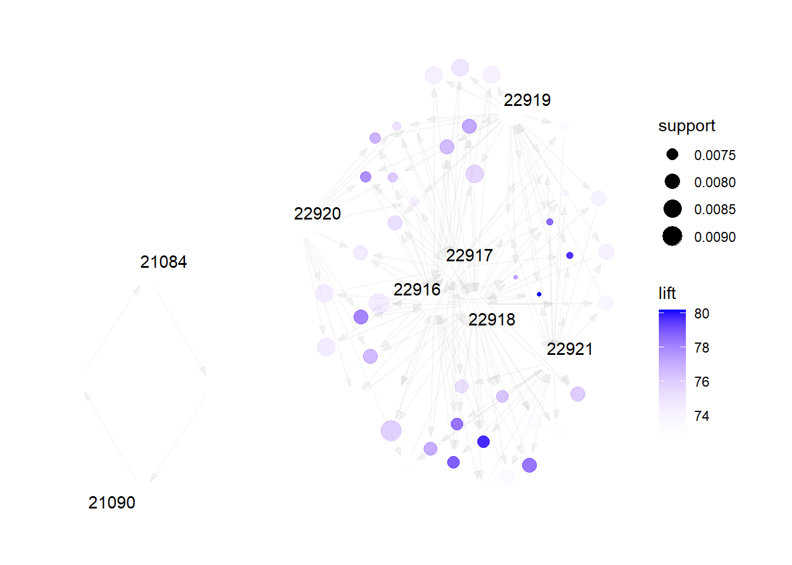
itemFrequencyPlot(retail_trans_stock,topN=30,type = 'absolut',horiz = TRUE)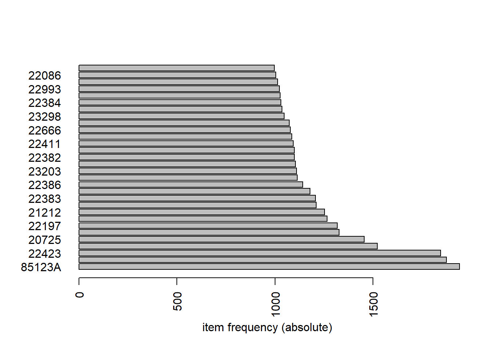